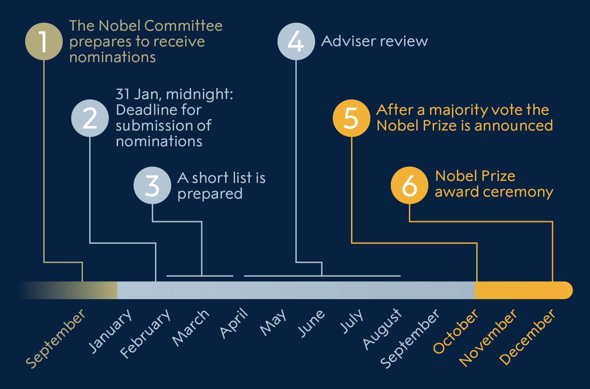

Nomination and selection of Nobel Peace Prize laureates
A nomination for the Nobel Peace Prize may be submitted by any person who meets the nomination criteria. A letter of invitation to submit is not required. The names of the nominees and other information about the nominations cannot be revealed until 50 years later.
Nominations for the 2023 Nobel Peace Prize
There are 305 candidates for the Nobel Peace Prize for 2023 out of which 212 are individuals and 93 are organizations.
305 candidates are less than last year (343) and the lowest number of candidates since 2019. For eight years in a row the number of candidates has been exceeding 300. The current record of 376 candidates was reached in 2016.
Neither the names of nominators nor of nominees for the Nobel Peace Prize may be divulged until 50 years have elapsed.
Process of nomination and selection
The Norwegian Nobel Committee is responsible for selecting the Nobel Peace Prize laureates. A nomination for the Nobel Peace Prize may be submitted by any persons who are qualified to nominate.
Qualified nominators
According to the statutes of the Nobel Foundation, a nomination is considered valid if it is submitted by a person who falls within one of the following categories:
- Members of national assemblies and national governments (cabinet members/ministers) of sovereign states as well as current heads of states
- Members of The International Court of Justice in The Hague and The Permanent Court of Arbitration in The Hague
- Members of l’Institut de Droit International
- Members of the international board of the Women’s International League for Peace and Freedom
- University professors, professors emeriti and associate professors of history, social sciences, law, philosophy, theology, and religion; university rectors and university directors (or their equivalents); directors of peace research institutes and foreign policy institutes
- Persons who have been awarded the Nobel Peace Prize
- Members of the main board of directors or its equivalent of organisations that have been awarded the Nobel Peace Prize
- Current and former members of the Norwegian Nobel Committee (proposals by current members of the Committee to be submitted no later than at the first meeting of the Committee after 1 February)
- Former advisers to the Norwegian Nobel Committee
Unless otherwise stated the term members shall be understood as current (sitting) members.
Candidacy criteria
The candidates eligible for the Nobel Peace Prize are those persons or organisations nominated by qualified individuals, see above. A nomination for yourself will not be taken into consideration.
Selection of Nobel Prize laureates
The Norwegian Nobel Committee is responsible for the selection of eligible candidates and the choice of the Nobel Peace Prize laureates. The Committee is composed of five members appointed by the Storting (Norwegian parliament). The Nobel Peace Prize is awarded in Oslo, Norway, not in Stockholm, Sweden, where the Nobel Prizes in Physics, Chemistry, Physiology or Medicine, Literature and the prize in economic sciences are awarded.
How are the Nobel Prize laureates selected?
The nomination process for Nobel Peace Prize laureates. Ill. Niklas ElmehedBelow is a brief description of the process involved in selecting the Nobel Peace Prize laureates.
September – The Norwegian Nobel Committee prepares to receive nominations. These nominations will be submitted by members of national assemblies, governments, and international courts of law; university chancellors, professors of social science, history, philosophy, law and theology; leaders of peace research institutes and institutes of foreign affairs; previous Nobel Peace Prize laureates; board members of organisations that have received the Nobel Peace Prize; present and past members of the Norwegian Nobel Committee; and former advisers of the Norwegian Nobel Institute.
February – Deadline for submission. In order to be considered for the award of the year, nominations for the Nobel Peace Prize shall be sent in to the Norwegian Nobel Committee in Oslo before the 1st day of February the same year. Nominations postmarked and received after this date are included in the following year’s discussions. In recent years, the Committee has received close to 200 different nominations for different nominations for the Nobel Peace Prize. The number of nominating letters is much higher, as many are for the same candidates.
February-March – Short list. The Committee assesses the candidates’ work and prepares a short list.
March-August – Adviser review.
October – Nobel Prize laureates are chosen. At the beginning of October, the Nobel Committee chooses the Nobel Peace Prize laureates through a majority vote. The decision is final and without appeal. The names of the Nobel Peace Prize laureates are then announced.
December – Nobel Prize laureates receive their prize. The Nobel Peace Prize award ceremony takes place on 10 December in Oslo, Norway, where the laureates receive their Nobel Prize, which consists of a Nobel Prize medal and diploma, and a document confirming the prize amount.
Are the nominations made public?
The statutes of the Nobel Foundation restrict disclosure of information about the nominations, whether publicly or privately, for 50 years. The restriction concerns the nominees and nominators, as well as investigations and opinions related to the award of a prize.
Submission
Submission of nominations
The Norwegian Nobel Committee has launched an on-line nomination form that you can use if you are a qualified nominator (see the list ‘Qualified nominators’) above). The form can be reached from the website of the Norwegian Nobel Committee between September and February.
Deadline for nominations
Nomination deadline is 31 January at 12 midnight CET. Nominations which do not meet the deadline are normally included in the following year’s assessment. Members of the Nobel Committee are entitled to submit their own nominations as late as at the first meeting of the Committee after the expiry of the deadline.
Selection process
At the first meeting of the Nobel Committee after the February 1 deadline for nominations, the Committee’s Permanent Secretary presents the list of the year’s candidates. The Committee may on that occasion add further names to the list, after which the nomination process is closed, and discussion of the particular candidates begins. In the light of this first review, the Committee draws up the so-called short list – i.e. the list of candidates selected for more thorough consideration. The short list typically contains from twenty to thirty candidates.
The candidates on the short list are then considered by the Nobel Institute’s permanent advisers. In addition to the Institute’s Director and Research Director, the body of advisers generally consists of a small group of Norwegian university professors with broad expertise in subject areas with a bearing on the Peace Prize. The advisers usually have a couple of months in which to draw up their reports. Reports are also occasionally requested from other Norwegian and foreign experts.
When the advisers’ reports have been presented, the Nobel Committee embarks on a thorough-going discussion of the most likely candidates. In the process, the need often arises to obtain additional information and updates about candidates from additional experts, often foreign. As a rule, the Committee reaches a decision only at its very last meeting before the announcement of the Prize at the beginning of October.
The Committee seeks to achieve unanimity in its selection of the Nobel Peace Prize laureate. On the rare occasions when this proves impossible, the selection is decided by a simple majority vote.
50 year secrecy rule
The Committee does not itself announce the names of nominees, neither to the media nor to the candidates themselves. In so far as certain names crop up in the advance speculations as to who will be awarded any given year’s prize, this is either sheer guesswork or information put out by the person or persons behind the nomination. Information in the Nobel Committee’s nomination database is not made public until after fifty years.
Questions and answers about the nomination process for a Nobel Peace Prize
Read more about how the Nobel Prize laureates are nominated:
Nomination of the physics laureatesNomination of the chemistry laureates
Nomination of the medicine laureates
Nomination of the literature laureates
Nomination of the peace laureates